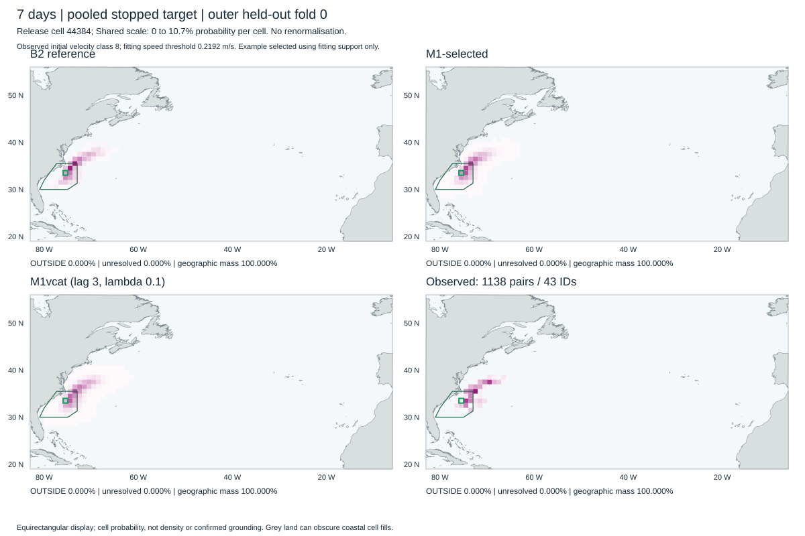
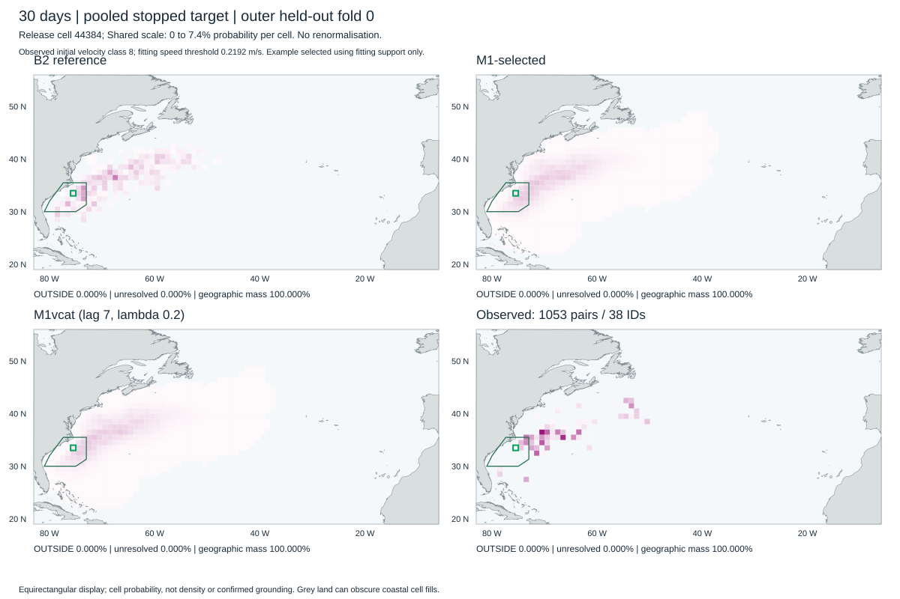

Development outer-held-ID results. Known initial velocity; annual pooled. Lower S is better. No final-test claim.
| horizon_days | model | brier_failure_penalized | region90_hit_pct_available | mean_region90_cells | zero_probability_pct |
|---|---|---|---|---|---|
| 7 | B0 | 1.71002 | 14.4991 | 1 | 85.5009 |
| 7 | B1 | 0.979073 | 89.0312 | 48.5073 | 0.0675925 |
| 7 | B2 | 0.929001 | 87.439 | 18.2258 | 2.08218 |
| 7 | M1-selected | 0.927354 | 89.5429 | 19.9228 | 0.0319828 |
| 7 | M1vcat-raw | 0.921776 | 92.2189 | 20.7965 | 0.0158265 |
| 7 | M1vcat-selected | 0.921873 | 92.119 | 20.7883 | 0.024729 |
| 30 | B0 | 1.92755 | 3.6227 | 1 | 96.3773 |
| 30 | B1 | 0.991465 | 85.1798 | 136.294 | 1.09406 |
| 30 | B2 | 0.994751 | 66.3726 | 62.6083 | 17.4589 |
| 30 | M1-selected | 0.985785 | 87.3493 | 96.2339 | 0.153904 |
| 30 | M1vcat-raw | 0.985275 | 89.775 | 102.908 | 0.153904 |
| 30 | M1vcat-selected | 0.985249 | 89.6207 | 101.773 | 0.153904 |
Full mathematical method, choices and limitations

